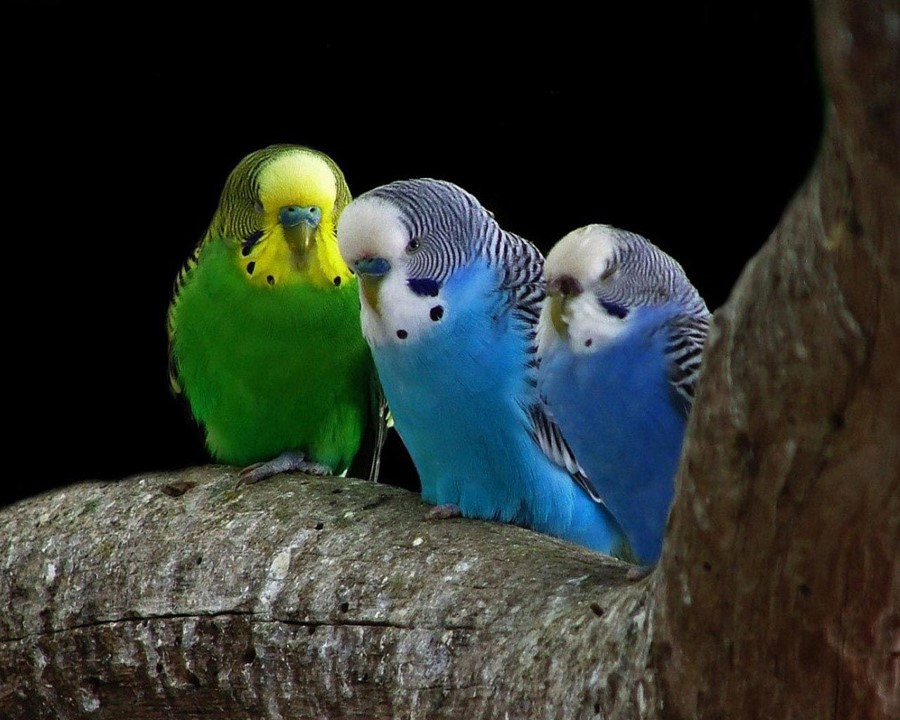
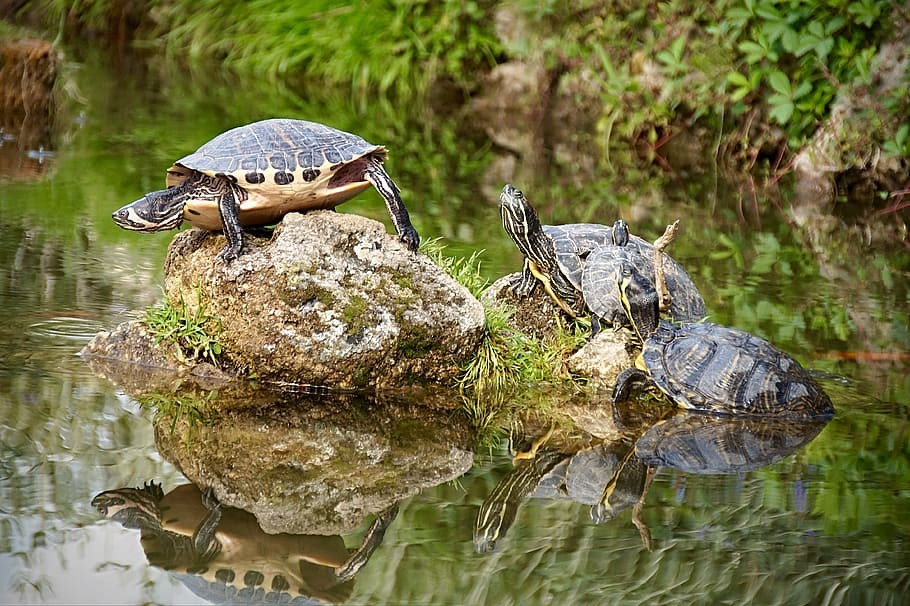

Estos animales pueden alargar tu esperanza de vida. Por algo son el mejor amigo
del hombre. Fieles, incondicionales, cariñosos… los perros son mascotas ideales
para cualquier edad, pero, en lo que respecta a los niños, es importante dar con
la raza perfecta.
Gatos
Un amigo solitario
Los gatos también son animales de compañía que ofrecen mucho amor y cariño a sus dueños.
Además, adoran jugar y mantenerse entretenidos, por lo que son ideales para los niños.
Conejos
Un amigo saltarin
Estos animales domésticos pequeños tienen mucha fama, básicamente, porque son una monada.
Son mascotas cariñosas que adoran los mimos, ¡y también son muy limpias! Lo ideal es que
los conejos tengan espacio suficiente para moverse por la casa y explorar, aunque tienen
tendencia a roer cables y otros elementos, así que, si no quieres tener disgustos, lo mejor
es que te hagas con un parque para roedores.
Periquitos

Un amigo con alas
Los periquitos son sociables, por lo que los niños pueden interaccionar con ellos y
enseñarles algún truco, de hecho, pueden pasar tiempo sueltos por la casa (después de
asegurarse de que todas las ventanas están cerradas). Su carácter es amigable y sus cuidados
son sencillos, así que es la primera mascota perfecta durante la infancia.
Tortugas

Un amigo supuestamente lento
A diferencia de la tortuga de orejas rojas, las de orejas amarillas no tiene únicamente unas
franjas del color, si no que tiene el color amarillo a rayas por todo el cuerpo. También es
una de las razas de tortugas de agua y omnívora, no supera los 30 centímetros y su esperanza
de vida ronda los 40 años.